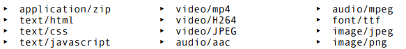

Para acessar links externos, de fora do seu site, use: <a href="[link]"> [texto] </a>
Com isso, ele abre o link na mesma aba fazendo com que você perca a página anterior. Caso queira abrir em uma outra janela, use dentro de <a>: target="_blank".
É recomendável que nesses casos use rel="external" no <a>
Para usar o href="[link]", o link tem que ser em: https://www ou semelhantes, como http
Para acessar links internos, que servem para acessar as páginas de dentro do nosso prórpio site, use: <a href="[arquivo/link/caminho]"> [texto] </a> OBS:Se quiser voltar pasta, use: target="../[pasta]". A quantidade de pontos é quantas pastas estão voltando. Lembrando que ./ é na mesma pasta, então começa na ../. Já na pasta seguinte, apenas: target="[pasta]/[arquivo]"
Nesses casos talvez não precise usar o target="_blank", e nem rel="external" (já que é interno). Mas se quiser, pode usar: target="_self".
Mas caso seja para voltar a pagina ou avançar para próxima página, pode usar: rel="prev" (para voltar a página) ou rel="next" (para avançar para próxima página). Lembrando: Usa-se dentro do <a>
Para usar links que dê para efetuar downloads, use: <a href="[link/arquivo/caminho]" download="[nome do arquivo]" type="[tipo do arquivo]"> [texto] </a>;
No type="[tipo de arquivo]", o tipo de arquivo você pode verificar em: https://www.iana.org/assignments/media-types/media-types.xhtml

Caso queira saber mais sobre o rel="[informação]", pesquisar na internet. Pois existem vários outros tipos como, por exemplo, sites dúvidosos ou sem aval seu, que usa: rel="nofollow".